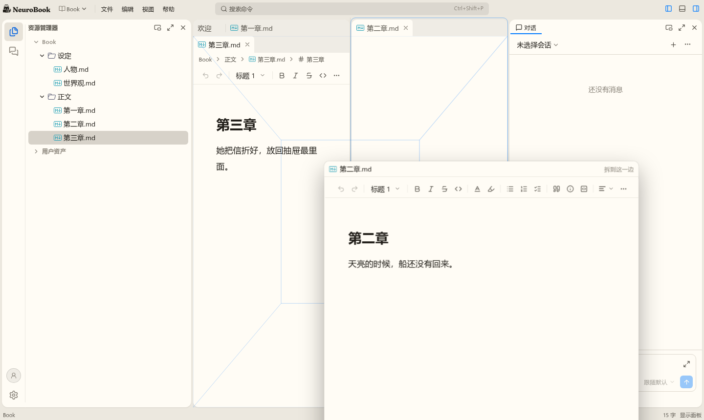
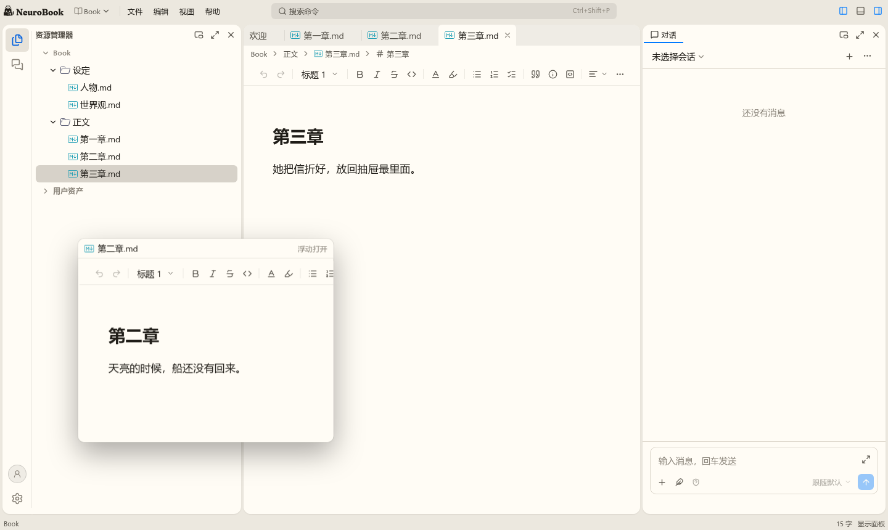
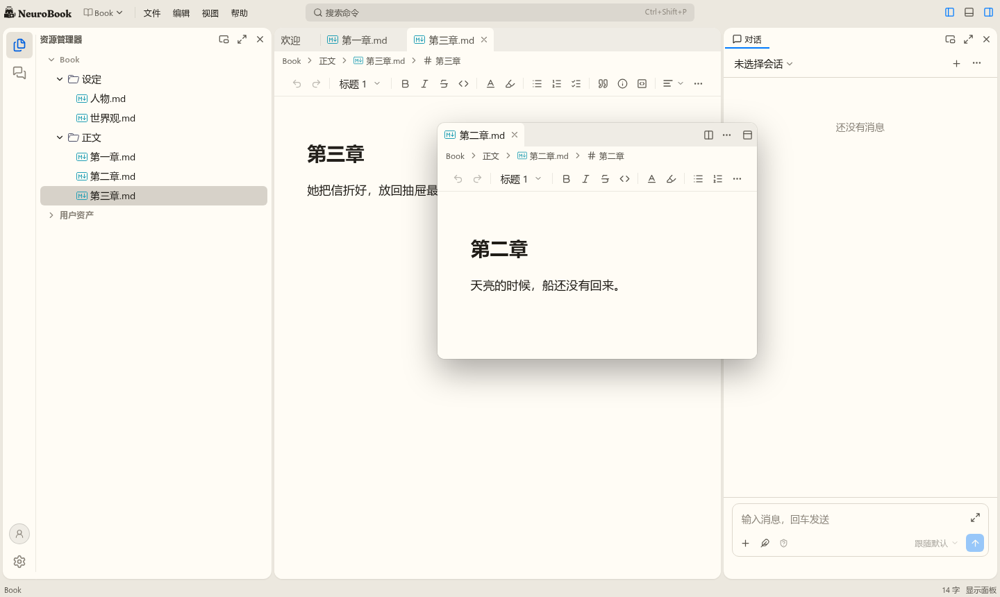
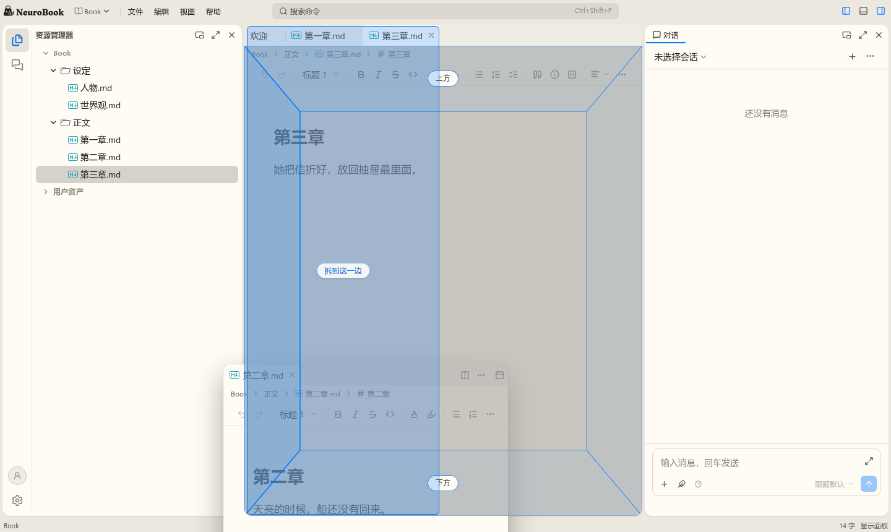
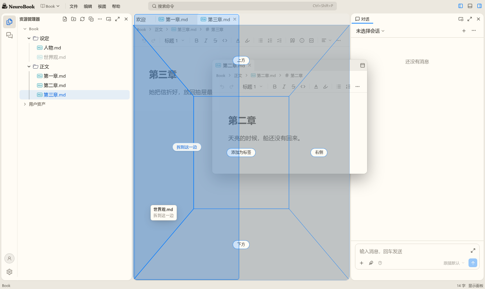

t07、t16、t17、t19、t08、t09、t10、t18 都已合入 master，每个都过了设计审查（t18 没做，改动机械）与实现审查。t13 搁置，t11、t12、t14 这一轮不做。下面是要你亲手试的地方、截图，和所有“本该你决定、我先按推荐做了”的条目。
--motion-move 280ms。开关、分段控件、chevron、展开收起看着对不对；菜单入场和对话框我留了短时长，没有并排比过。




| 日期 | Task | 类别 | 决定 | 理由 | 改回代价 |
|---|---|---|---|---|---|
| 2026-11-06 | t07 | 产品取舍 | 活动栏点可见的视图就隐藏面板，不再有“可见但没聚焦时先聚焦”这一步 | “活动栏改回”按旧外壳输出 15，也是 VS Code 的缺省 | 低：toolEntryIntent 加回一步 |
| 2026-11-06 | t07 | 产品取舍 | 活动栏隐藏时，侧栏这一列的头画标签带 | 不然切不了视图，也拖不了别的标签 | 低：一个条件 |
| 2026-11-06 | t07 | 产品取舍 | 侧栏这一列有几块面板时，活动栏列全部视图，按树序、面板内按标签序，可以有几项按下 | 决定写的是“只列侧栏这一列的视图”，旧外壳的“至多一项选中”对应一列一块的情况 | 低 |
| 2026-11-06 | t07 | 产品取舍 | 活动栏的条目能拖动换序，顺序就是这一列的标签顺序（旧外壳就能换序；片 7a 的 Spec 写过不能） | 放到活动栏要有插入位，同一个动作 | 低 |
| 2026-11-06 | t07 | 偏离已说的范围 | 给 LayoutPolicy 加了按边回答的钩子 edgeTarget，moveTabToEdge 不整块移动具名面板，showPanelAndInsert 加 index。之前说过“改动放在工作台的规则里，nb-layout 不动” | 缝与窄带的判定在库里，按边限制不开钩子就要在工作台重写一遍判定；具名单标签整块移动会把侧栏搬到右栏，破坏骨架 | 低 |
| 2026-11-06 | t07 | 产品取舍 | 面板头的收起按钮只给上下排的面板；侧栏只有一块、右栏只有一块、面板这一排左右分时没有这个按钮 | 横向分支里收起就是零宽，和隐藏重复；无名面板零宽后只剩 1px 边界能找回。子代理改 e2e 时指出 | 低：一个条件 |
| 2026-11-06 | t16 | 偏离已接受的提案（待开发者追认） | 不做工作台发起的两阶段关闭（requestClose）：标签条画在编辑器自己的头里，关闭由编辑器发起，结算后才从布局拿掉 | 工作台没有发起关闭的入口，接口没有调用方；t09 的浮动窗要整窗关闭时再加 | 低：加一个接口 |
| 2026-11-06 | t16 | 产品取舍 | Spec 输出 19 跟实际：工具面板当前标签是下划线加变色，编辑组是块状（Spec 原写加粗） | 代码一直如此，开发者试过几轮没提；这是我的推断，没有记录 | 低：改样式 |
| 2026-11-06 | t16 | 产品取舍 | 工具面板的标签也能 Alt 加方向键换序 | 统一标签条之后是同一份键盘；提案第 5 节写了 | 低 |
| 2026-11-06 | t16 | 审查意见接受取舍 | 外框正在过渡时标签又折行：内容带着过渡，新的一行被盖约 470ms | 很少见，消掉要给内容另开一条不过渡的上边 | 中 |
| 2026-11-06 | t17 | 审查意见接受取舍 | 回收控件只卸 Vue 组件、留着编辑器实例与视图状态：撤销、滚动都不丢，省的只是 DOM；视图状态随打开过的标签增长，不再按每组 3 份淘汰 | 提案写的是回收不丢；销毁 TipTap 实例就丢撤销。片 2 量内存 | 中：要省内存得让编辑状态脱离实例 |
| 2026-11-06 | t17 | 产品取舍 | preview 替换照旧换 tabId，每步建一个控件 | 留同一个 id 要处理按 id 现查写错标签，也和提案不一致；片 2 量代价 | 中 |
| 2026-11-06 | t17 | 产品取舍 | “用其它编辑器重新打开”之后，换下的那种编辑器的视图状态与实例立即释放，换回来撤销从空开始（以前每组每种留 3 份，换回来可能还在） | 计划定的释放路径只有三条，按标签存之后不再有“最近 3 份”的淘汰；留着会让每个标签多存一份 | 低：changeEditor 不放，关闭时一起放 |
| 2026-11-06 | t17 | 产品取舍 | 面包屑选文件后焦点到打开的视图（以前留在面包屑上）：这块内容的面包屑随之没了 | 不交就掉到页面根 | 低：open 不带 reveal |
| 2026-11-06 | t17 | 产品取舍 | 恢复会话时活动标签是图片这类字节标签，也把焦点交给它（以前只有文本标签） | 并成一条等待路径后不再区分；控件有句柄就能接焦点 | 低：等待路径里加一个条件 |
| 2026-11-06 | t19 | 产品取舍 | 落点分区是一个开关（nbook.workbench/dropSectors，缺省开，只有用户层），不按手感分 | 提案手感表里就是一行；实时布局下怎么画由 t08 定 | 低：多一个设置键 |
| 2026-11-06 | t19 | 产品取舍 | 药丸（放到两块之间、原位这些字）照旧显示，当前块不写自己的方向字；原型是分区写字时隐藏药丸 | 药丸说的比方向多（Spec 28 的“原位”），隐藏要改 22 处断言与 live 区 | 低：DropFeedbackOverlay 加属性 |
| 2026-11-07 | t08 | 产品取舍 | 减少动效、有面板最大化、键盘拖动时一律落点指示 | 减少动效时邻居瞬移看不出去了哪；最大化时别的面板盖着预览看不见；键盘没有指针可跟 | 低：拿起时的一个判断 |
| 2026-11-07 | t08 | 产品取舍 | 预览里露出来的编辑器标签没有面包屑，没活动过的是空白；工具视图没打开过的也空白 | 预览不改可见性（Spec 输出 17），不为预览打开文档、加载视图 | 中：要让内容层认预览，还要处理副作用 |
| 2026-11-07 | t08 | 产品取舍 | 目标组已有同一文件时不预览布局，卡片上写字，松手照常并掉；固定分区的差异不预览 | moveTab 的结果和布局预览不同，摆一个提交不出来的布局更糟 | 低 |
| 2026-11-07 | t08 | 产品取舍 | 工具面板头（adapt）里拖标签不做滑开，换序直接到位；编辑组的标签条才滑 | adapt 换档时所有标签一起变宽，滑开看不出来还抖 | 中：要冻住档位 |
| 2026-11-07 | t08 | 偏离已有 Spec | 实时布局下容器尺寸变了整场取消（落点指示照旧重算） | 判定基准是拿起时的矩形，尺寸变了就没了，也无法从预览里量回来 | 中 |
| 2026-11-07 | t08 | 手感待试 | 10.6 万字章节开着时实时布局 p95 50ms、最长 83ms（计划的线 50ms；审查修正前第一次是 67ms）；没有动手感。退路：加长稳定时长，或预览期间邻居内容用最终尺寸（这和“内容跟随”冲突，要开发者定） | 测量在负载 5 到 8、软件渲染下，真机应更好；每帧多余的渲染已经去掉 | 低：一个常量或一个条件 |
| 2026-11-07 | t08 | 审查意见接受取舍 | 拿起不活动、没有实例的标签时卡片的内容是空白 | 为它加载实例有副作用（Spec 输出 17），和预览同一个口径 | 中：卡片的内容体画标题与图标的占位 |
| 2026-11-07 | t09 | 偏离已接受的提案 | 浮动窗不用全局层级 workbenchFloat，放在网格根的层叠上下文里 | 内容层要和外框同一父元素才能浮动与停靠之间不重建；全局次序不变，仍在下拉菜单之下 | 高：要改内容层的所有权 |
| 2026-11-07 | t09 | 产品取舍 | 浮动窗没有相邻：“在侧边打开”、拆分、关到空后的焦点、“回到停靠”都落到树序最后一个编辑组，不记最近活动的那个 | 少存一份状态；多数时候只有一两个组 | 低：store 记一个 id |
| 2026-11-07 | t09 | 产品取舍 | 新项目的模板带上浮动的工具视图 | 模板就是上一次的布局；矩形呈现时夹取，不会跑出去 | 低：模板里摘掉 |
| 2026-11-07 | t09 | 产品取舍 | 拖动不浮动的情形：按钮区、菜单与对话框挡着、活动栏放不进；窗口外算浮动 | 活动栏是想放进侧栏，放不进不该开窗；窗口外在 t12 之前的回退就是应用内浮动 | 低 |
| 2026-11-07 | t09 | 手感待试 | 整窗拖动不走实时布局：窗一直跟手，经过停靠位置时按落点指示画反馈 | 窗没有卡片可缩，候选文档里它已经没了，指针下什么也跟不上 | 中：要把窗缩成卡片 |
| 2026-11-07 | t09 | 产品取舍 | 手柄贴着窗的边往里（上边 3px，其余 6px），不骑在边上 | 骑在边上要越出窗，网格根裁切；上边留给标签条的拖动 | 低：几个 CSS 值 |
| 2026-11-07 | t09 | 产品取舍 | 树里的工具面板头多一个“浮动”按钮，标签右键也有 | 提案第 5 节如此；键盘用户要有入口 | 低：框架按钮表里删一行 |
| 2026-11-07 | t10 | 偏离已接受的提案 | 资源树保留自己的拖动会话，出树后只用工作台的落点规则，没有实时布局（提案写一场拖动归工作台的会话） | 树内的令牌冻结、边缘滚动与飞回接到外壳会话要改一大片；Task 写着实在难就用落点指示 | 高：控制器改接外壳会话 |
| 2026-11-07 | t10 | 产品取舍 | 决定 6 在资源树自己的面板里收窄：指针还在拖动源那块面板时松手取消，不开窗 | 往树下边缘自动滚动时过冲是最常见的路径，开出一个窗不是用户要的 | 低：去掉一个判断 |
| 2026-11-07 | t18 | 手感待试 | 控件里的位移与形变用新令牌 --motion-move 280ms（标签指示块、开关、chevron、展开收起、分栏开合）；原计划在 Lab 里并排试再定，这里先按推荐定了 | 这条曲线四分之一时长走完 78%，280ms 看得出在动又不拖 | 低：tokens.css 改一个数 |
| 2026-11-07 | t18 | 产品取舍 | --ease-standard 退役，不留别名，四个主题的覆盖删掉：曲线不再随主题变 | 开发者要全应用同一条；设计语言已写“顺滑是全应用的手感，不是主题的个性” | 中：主题要再加回去 |
| 2026-11-07 | t18 | 产品取舍 | 活动栏、面板标签条、资源管理器的切换没有新增滑动动画，只把已有的变色换曲线；开发者点名的“标签切换、活动栏切换”现在就是变色 | 没有移动的指示物，加一个是新设计 | 中：要新做指示物 |
| 2026-11-07 | t18 | 手感待试 | 菜单入场（--motion-fast）、没有来处的对话框（--motion-base）照旧短时长，配主曲线几乎是出现而不是长出来；通知入场 --motion-enter 提到 320ms | 设计语言写这里的等待读作迟钝；没有并排试过 | 低：改令牌或这几处的取值 |